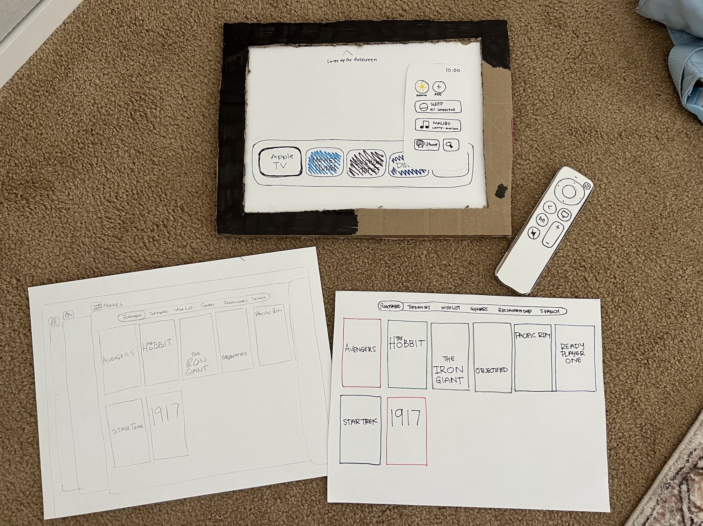
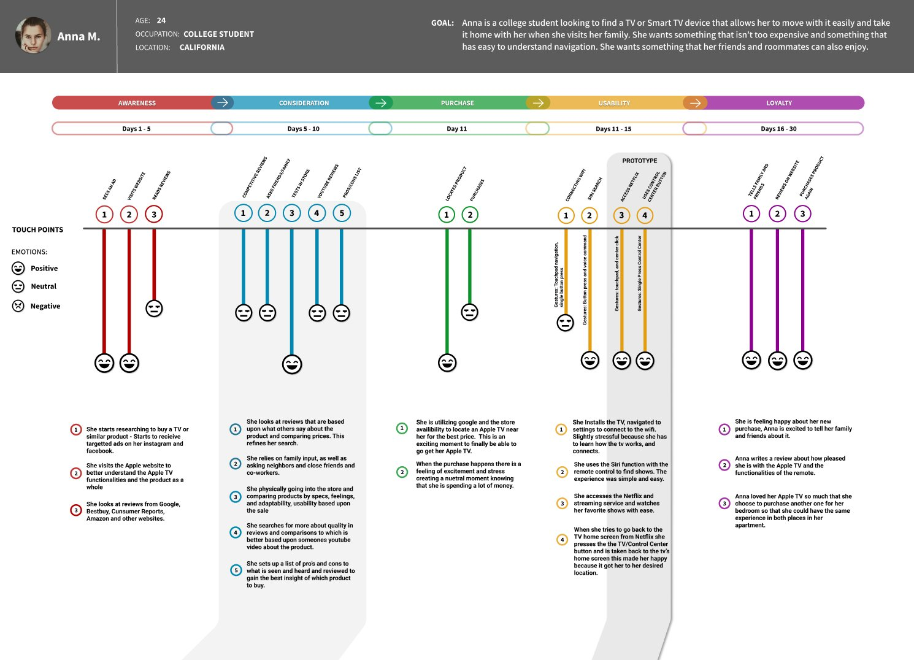
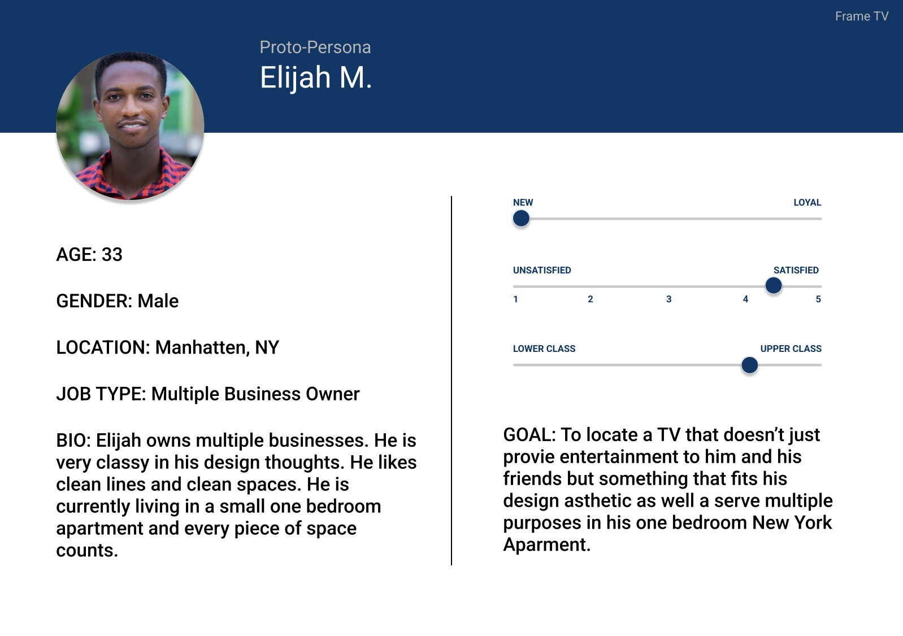
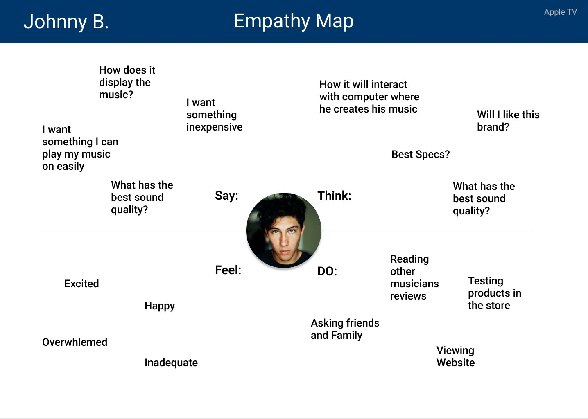
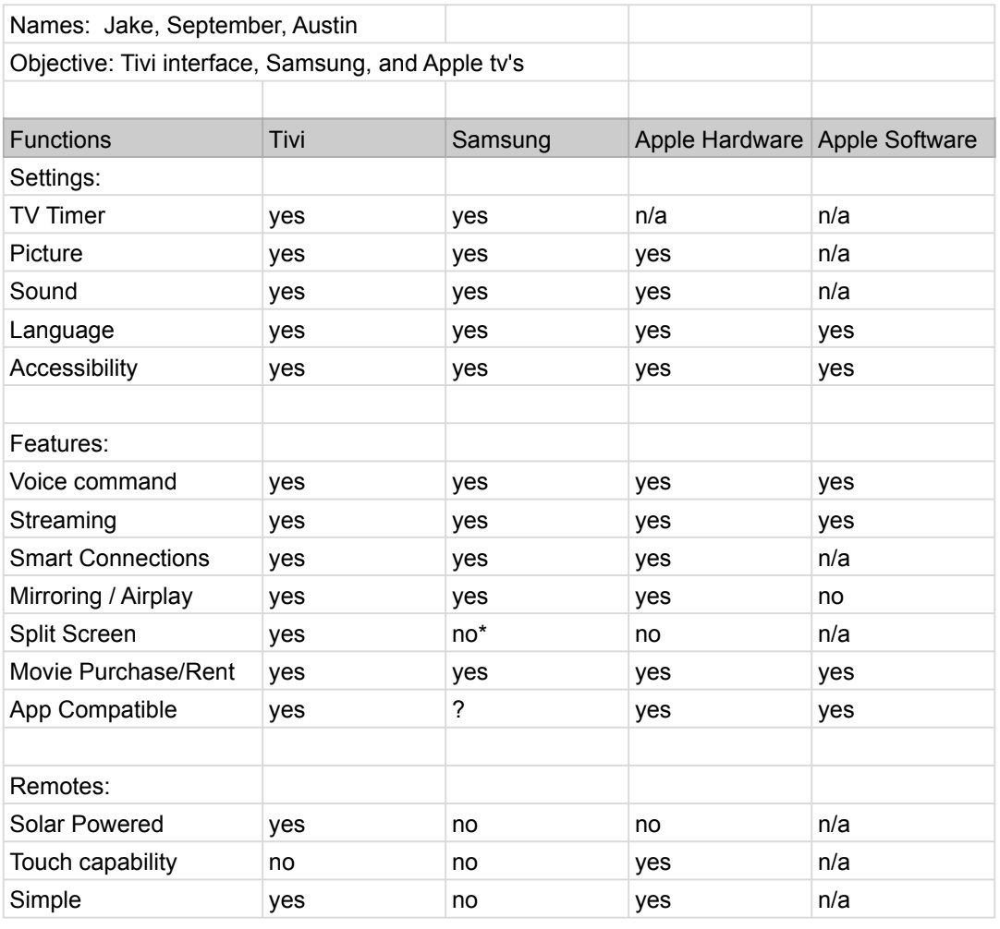

Five research methods to move one button.
A team audit of three home media centres, ending in a paper prototype that changes what one button on the Apple TV remote does.
- Role
- Research and design, in a team of three
- Team
- September Utley, Austin Turner, Jake Carter
- Scope
- Audit, personas, journey maps, paper prototype
- Status
- Coursework


The brief
I worked on a team with September Utley and Austin Turner. The goal was to research and discover potential design enhancements by finding the design flaws, and the successes, that curtail or enhance the intended experience of a product.
The products were home media centres: the Samsung Frame, a Sony TV and the Apple TV. Our task was to review all three through audit, analysis and review of the audience, assess every aspect of them, and build a paper prototype showing an enhancement to one.
Research
We started by exploring the products and learning how they worked. We built a chart showing which televisions had which settings and features, and did the same for the remotes.
We read reviews for each set, to understand what customers actually like and dislike rather than what the spec sheets claim. Then we ran a product controls, touch and gesture audit focused on the remotes, and found they function very differently from one another: one is powered by solar panels on the back, one has far too many buttons, and one gives a single button multiple functions.
Personas and empathy maps
We made six proto-personas, two for each television. That was the first step towards understanding the people who would actually be using these products rather than designing for ourselves.
Empathy maps for each persona took it further. Splitting what a person says, thinks, feels and does let us get at their emotions about the products, not just their requirements.
The journey map
This was the part that did the real work. We picked one persona, Anna, a 24 year old college student in California who wants a TV she can move easily and that her friends and roommates can navigate. We mapped her whole journey across a month: researching the Apple TV, buying it, setting it up, and finally reviewing it.
The flaw surfaced in the usability stage. Anna presses the TV/Control Center button on the remote expecting the television's home screen, and instead lands on the home page of the Apple streaming service. She has to press it repeatedly to get where she meant to go. On the map that stretch is the only run of negative faces in an otherwise positive month.
The prototype
We built a paper prototype from cardboard and hand-drawn screens, with a paper remote, and used it to test the fix: change the TV/Control Center button so a single press takes you to the television's home screen.
Then we drew the journey map a second time. The post-prototype version covers the same month with the same persona, and the usability stage drops from five touch points to four, with the negative emotions gone.
What it shows
The enhancement is tiny. One button, one behaviour. Getting to it took a feature audit, a gesture audit, review analysis, six personas, six empathy maps, two journey maps and a cardboard prototype.
That is the point of the project, and the reason it is still in this portfolio years later. The research is not decoration on the way to a redesign. It is what tells you the fix is one button rather than a new interface.




Next project
Interactive Coffee Book